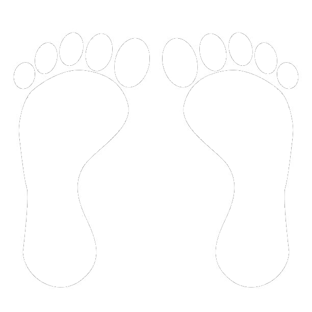

Sensor Fusion Dashboard
40 Hz (Max)
20 Hz
10 Hz
5 Hz
2 Hz
Manual Recording
10 Seconds
15 Seconds
30 Seconds
1 Minute
2 Minutes
5 Minutes
Start Recording
00:00
Left Foot Force
Combined Pressure Heatmap

Right Foot Force
IMU Data (WT901BLECL5.0)
Acceleration (m/s²)
X:
N/A
Y:
N/A
Z:
N/A
Gyroscope (°/s)
X:
N/A
Y:
N/A
Z:
N/A
Angles (Euler)
Roll:
N/A
°
Pitch:
N/A
°
Yaw:
N/A
°